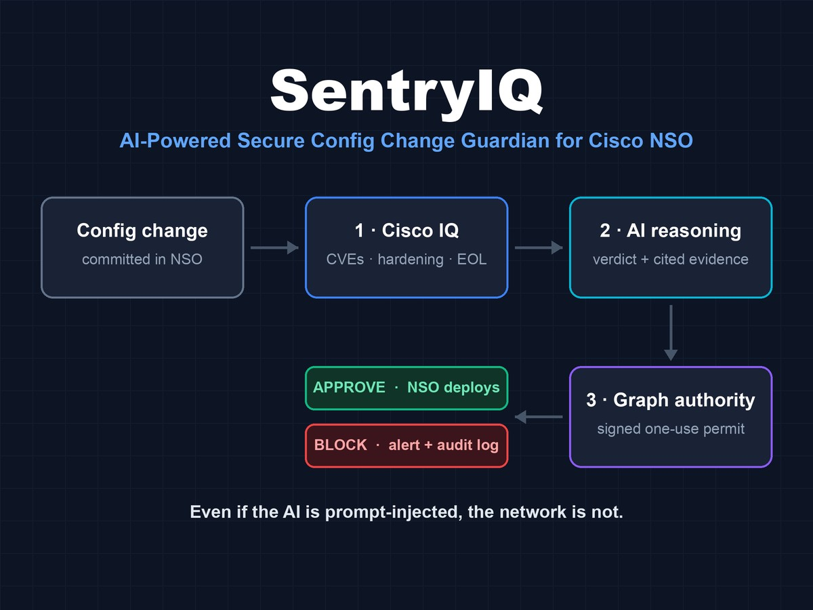
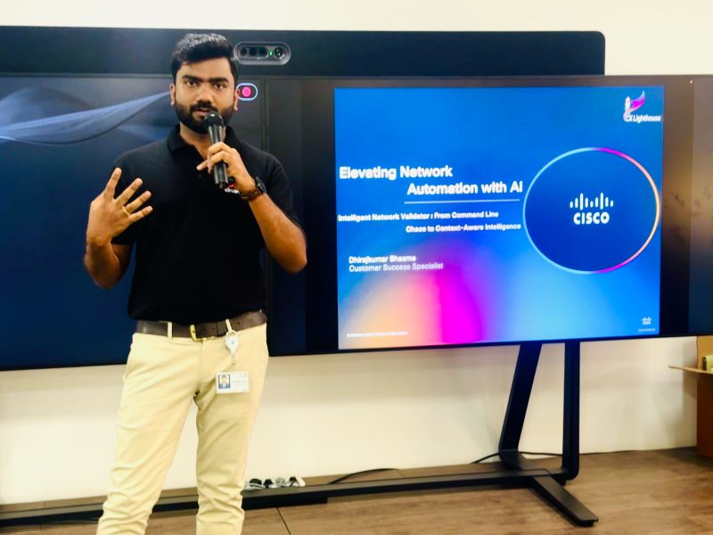
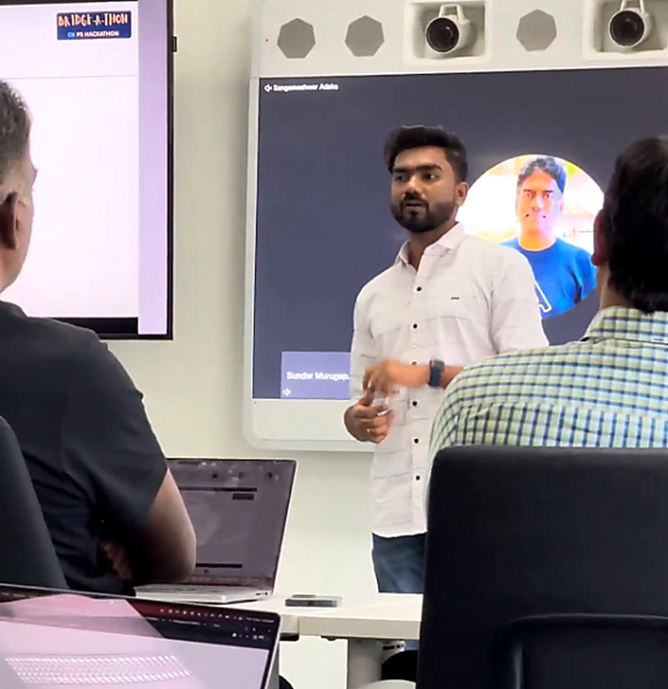

Software Consulting Engineer & AI Network Automation Architect
Product Owner and Automation Architect with 11+ years of experience at the intersection of AI and Network Operations. Currently leading AI-enabled network automation at Cisco, leveraging Large Language Models (LLMs), Model Context Protocol (MCP), and Cisco NSO to build intelligent service orchestration platforms. Expert in API-driven backend systems and AIOps frameworks that transform traditional infrastructures into programmable, self-healing networks.
Experience & Leadership
Started my journey as a Network Engineer, building expertise in data center operations and core network infrastructure. Progressed to Network Automation, where I developed backend solutions for NSO using Python. Now advancing to a Solution Architect role, designing comprehensive network solutions and delivering end-to-end implementations that drive customer success.
Solution Architecture
Architect scalable, AI-driven network solutions that bridge business requirements with technical excellence. Specialize in designing enterprise-grade infrastructures, defining solution blueprints, and guiding customers through complex implementations. Combine deep technical knowledge with strategic vision to deliver transformative network solutions.
Agile delivery for network platforms, customer requirement gathering, HLDs, and LLDs with stakeholder engagement.
API-driven orchestration using JSON-RPC and Python for robust, high-performance network solutions.
End-to-end network lifecycle management ensuring scalability, reliability, and security across complex environments.
Cross-functional collaboration and team leadership driving innovation and delivering business-aligned technical solutions.
Pioneering intelligent automation at the intersection of AI and network operations
Integrated Large Language Models into bot frameworks for intelligent automation and real-time decision-making in network infrastructures.
Built interactions with Multi-Domain Control Plane systems enabling self-healing capabilities in modern network environments.
Transformed network management through AI-powered automation, reducing manual intervention and improving reliability.
Sharing ideas and building impactful solutions under pressure

An AI security gateway between network engineers and Cisco NSO. Before any config change reaches the network, an NSO pre-commit hook sends it to SentryIQ, which checks it against Cisco IQ security advisories, CVEs, hardening baselines, and device end-of-life status. Then it approves the change or blocks it.
My role: Lead engineer and NSO expert, owning the NSO pre-commit hook, Cisco IQ integration, the AI reasoning layer, and the FastAPI backend. Built with teammate Shreyash Sharma, who leads the graph-authority and AI-safety layer.
“Standing guard between your engineers and your network.”

Presented an AI-driven validation engine that replaces manual precheck, postcheck, and compare work during change windows. Engineers send a plain-language message in Webex, and the system runs the checks, parses the outputs, compares the results, and replies with a clear summary, turning hours of manual work into seconds.
The problem: Validation is the riskiest part of a change window. It means running the same commands device by device, following criteria that differ between teams and old MOP documents, and spotting differences by scrolling through raw CLI output.
“We don’t just automate the commands… we automate the understanding.”
How it works
/invoke interface. Agents can be added or replaced without touching the bot. Tasks that aren’t agents yet go to the existing FastAPI backend, so nothing breaks during the migration.Roadmap

Designed and pitched UG-Bot — an intelligent Webex Teams bot acting as a one-stop solution for network operations across Cisco NSO, Crosswork, and REST API platforms. The bot addressed real-world CX delivery challenges through AI-driven automation.
Key Capabilities: Advanced documentation search (internal docs, Webex recordings, wiki), end-to-end service configuration (ISIS, OSPF, iBGP, eBGP, MPLS, SR), API execution across platforms, Git integration, platform health monitoring, and EoL/release tracking.
Impact: Projected 50%+ reduction in environment setup time, elimination of redundant manual tasks, and a unified knowledge base accessible to CX, TAC, CXPM, and Theatre teams — boosting delivery speed and accuracy across the organization.
A decade of progressive growth in network engineering and automation
Leading Network Service Orchestration and AI integration initiatives. Architecting enterprise-grade automation platforms powered by Cisco NSO, delivering AI-driven service orchestration for complex multi-vendor environments.
Developed advanced Python solutions for network automation. Architected and implemented Cisco NSO services for DU Telecom (UAE), automating network configuration and lifecycle management.
Automated network operations across 230+ resorts and 4,200+ properties spanning ~110 countries. Architected CI/CD pipeline using Ansible Tower and AWS, achieving 70% reduction in deployment time. Automated F5 and Palo Alto configurations via REST APIs, managing full node/virtual server lifecycle.
Built foundation in network operations, device upgrades, and L3 troubleshooting. Pioneered automation culture by building bots to optimize repetitive network operations.
Giving back to the community — alongside full-time employment
Taught network automation from scratch and mentored network engineers in their transition towards automation. Delivered online training covering Python for network automation, helping professionals build hands-on skills in scripting, device management, and workflow automation.
Issued Nov 2026 · Expires Nov 2029. Associate-level expertise in software development, APIs, application deployment, infrastructure automation, and Cisco DevNet platforms. View Credential ↗
Network Automation specialization demonstrating advanced automation capabilities.
Cisco Certified Network Associate Routing & Switching (ID: CSCO13356534) validating core networking expertise.
Certified Entry-Level Python Programmer showcasing programming proficiency.
Cisco-certified AI practitioner validating expertise in AI-driven network solutions and intelligent automation.
Issued Apr 2024 · Expired Apr 2026. Advanced certification in Generative AI principles and enterprise AI applications within Cisco's Data Science program.
Issued May 2021. Credential ID: 19262130779373. Cybersecurity certification validating offensive and defensive security skills.
Robotic Process Automation certification demonstrating expertise in enterprise automation workflows.
"I'm passionate about building the future of intelligent, AI-driven networks that are agile, automated, and resilient. Let's connect if you're exploring the intersection of AI, automation, and networking."